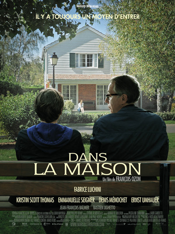

After LE WAGON experience, I would like to become a web developper and discover new cultures and languages.
GO somewhere
The 5th Element (Luc Besson)In the colorful future, a cab driver unwittingly becomes the central figure in the search for a legendary cosmic weapon to keep Evil and Mr Zorg at bay. |
|
|---|---|
Matrix (The Wachowski Brothers)A computer hacker learns from mysterious rebels about the true nature of his reality and his role in the war against its controllers. |
|
|  |
Dans la maison (François Ozon)A high school French teacher is drawn into a precocious student's increasingly transgressive story about his relationship with a friend's family. |
I don't know what to say here... So this is fake content ^^ Quam ob rem ut ii qui superiores sunt submittere se debent in amicitia, sic quodam modo inferiores extollere. Sunt enim quidam qui molestas amicitias faciunt, cum ipsi se contemni putant; quod non fere contingit nisi iis qui etiam contemnendos se arbitrantur; qui hac opinione non modo verbis sed etiam opere levandi sunt.